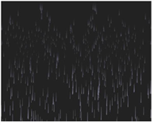
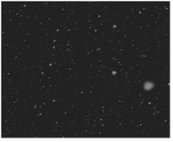

Nuke 的粒子节点集是在 3D 环境中创建粒子的解决方案。你可以创造像烟、雾、降雪、爆炸和气泡这样的东西 -- 可能性是无穷无尽的。可以使用各种粒子节点在 3D 场景中发射、操纵和显示无限类型的粒子。
以下是工作流的快速概述:
| 1。 | 创建 ParticleEmitter 节点，并将其连接到查看器。 |
| 2. | 将发射源和粒子表示连接到 发射 和 粒子 粒子发射器的输入。有关更多信息，请参见 连接粒子节点 . |
| 3. | 在 “粒子发射器属性” 面板中修改粒子的寿命、速度和其他基本属性。欲了解更多信息, 发射粒子 . |
| 4. | 将其他粒子节点连接到粒子发射器的输出。请参阅 调整粒子的速度和方向 , 修改粒子的运动 和 调整粒子模拟设置 . |
| 5. | 如果需要，缓存粒子模拟，以便在不需要重新计算的情况下将其读回。有关更多信息，请参见 缓存粒子 . |
|
 |
 |
| 使用粒子产生的雨。 | 使用粒子创建的雪 |
|
|